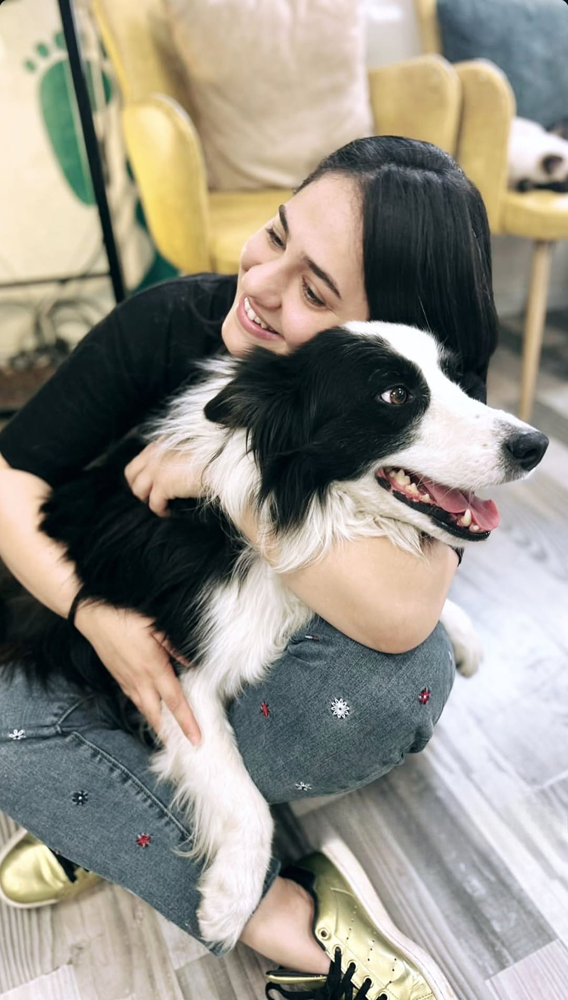

شكل الورشة
صف كاملأو مجموعات صغيرة
للتدعيم العاطفي بالقصة
لكل طفلٍ عالمُ مشاعرَ يستحق أن يُكتشف، وشمس ترافقه في رحلته عبر القصة.
برنامج ورشات تربوية داخل المدرسة: قصة، ثم أنشطة تفاعلية مع الأطفال في الصف أو في مجموعات صغيرة — تدعيم عاطفي وتربوي، وليس علاجًا نفسيًا.
في عالم القصة، يجد الطفل ما يشبهه: مشاعر عاشها، ومواقف مرّ بها، وأسئلة لم يعرف كيف يعبّر عنها. ومن خلال الشخصيات وأحداثها، نمنح الطفل مساحة آمنة ليفهم مشاعره، ويكتشف ذاته، ويرى المواقف بعيون الآخرين، ويتعلّم طرقاً جديدة للتعامل مع تحدياته.
فالقصة في برنامجنا ليست مجرد حكاية نرويها، بل جسر نعبر من خلاله إلى عالم الطفل العاطفي.
ومن هناك ننتقل إلى ما يمارسه الأطفال: حوار، لعب، تعبير فني وحركة — لتسمية المشاعر، وتجربتها في مجموعة آمنة، بعيدًا عن الحكم أو التصنيف.
عن البرنامج
يتعامل برنامج شمس مع القصة بوصفها وسيلة لفهم العالم الداخلي للطفل، لا كأداة تعليمية فقط.
ما يميّز البرنامج في المدرسة أن القصة نقطة انطلاق منظّمة: تُختار لتلامس تجربة الأطفال، ثم تُتابع بسلسلة أنشطة تفاعلية وفق منهجية GIVN — بما يخدم أهداف الصف والإدارة، ويكمل دور المعلم دون ادعاء دور علاجي.
تعتمد الورشات على منهجية GIVN، بحيث تكون القصة نقطة الانطلاق، ثم تُبنى حولها سلسلة من الأنشطة التفاعلية بما يمنح الأطفال تجربة عاطفية واجتماعية متكاملة.
القصة
نقطة الانطلاق، ومنها تُبنى الأنشطة التفاعلية
الألعاب
البطاقات
الفنون
الحركة
التمثيل
الحوار
الأنشطة الجماعية
تُترجم هذه المبادئ إلى أنشطة تربوية وتدعيمية، دون تقديمها كجلسات علاج نفسي.
صف كاملأو مجموعات صغيرة
5–8أطفال في المجموعة
حسب الاحتياجالمدرسة والفئة المستهدفة
المساحات التربوية
يُختار المجال بحسب احتياج الصف أو المدرسة. في كل ورشة تبدأ القصة، ثم تُبنى حولها أنشطة تساعد الأطفال على فهم مشاعرهم، والتعبير عنها، والتعامل مع المواقف اليومية — ضمن إطار تدعيمي واضح.
للأطفال الخجولين والانطوائيين، أو الذين يصعب عليهم التعبير عن أنفسهم أمام الصف.
لتقوية العلاقات الصحية والتواصل الإيجابي بين الأطفال وأقرانهم.
أدوات لفهم المشاعر والتعبير عنها بطريقة صحية، وضبط النفس عند الانفعال.
عندما يمرّ الصف أو المدرسة بفقدان مشترك، أو يفقد طفل أحدًا من أهله — نمنح مساحة هادئة للتفريغ العاطفي والدعم ضمن إطار تربوي.
لطلاب الصف الأول، أو الأطفال الجدد الذين يجدون صعوبة في الاندماج مع المجموعة.
لبناء علاقات محترمة بين الطلاب، ومواجهة التنمر وأشكال العلاقات الصعبة في الصف.
أربع لحظات متصلة في تجربة واحدة داخل المدرسة — تُنسَّق مع الإدارة والمعلم، وليست جدولًا زمنيًا جامدًا يُفرَض على الصف.
نبدأ من حكاية تلامس تجربة الطفل، وتفتح باب الحديث عن المشاعر والمواقف.
تُبنى حول القصة أنشطة تفاعلية — لعب، فن، حركة، حوار — وفق منهجية GIVN، بما يخدم هدف الورشة في الصف.
تُنفَّذ مع صف كامل أو مجموعة صغيرة، بحسب شكل التنفيذ الذي يناسب المدرسة.
كل لقاء ضمن إطار تربوي وتدعيمي، يخدم أهداف المدرسة والأطفال في الصف.
مؤسِّسة برنامج شمس
لصاحب القرار في المدرسة: البرنامج يقف على أسس أكاديمية وخبرة ميدانية مع الأطفال — لا على وعود عامة بلا إطار.
تعمل حالياً كمستشارة تربوية، وتجمع في عملها بين الخلفية الأكاديمية والخبرة الميدانية المباشرة مع الأطفال داخل البيئة المدرسية.
لقب أول في علم النفس.
لقب ثانٍ في الاستشارة التربوية والنفسية.
طالبة لقب ثانٍ في علم النفس الإكلينيكي.
شهادة تدريس في التربية الخاصة.
شهادة تخصصية في التدعيم العاطفي من خلال القصة.
مرشدة مؤهلة في التربية الجنسانية.

نرحب بحوار إدارات المدارس والمستشارين التربويين: ما الاحتياج في الصف؟ ما الشكل الأنسب — صف كامل أم مجموعة صغيرة؟ من هنا ننسّق الخطوة التالية معًا، من القصة إلى الأنشطة، ضمن الإطار التدعيمي للبرنامج.
لم يُضبط رقم واتساب بعد في إعدادات الموقع.